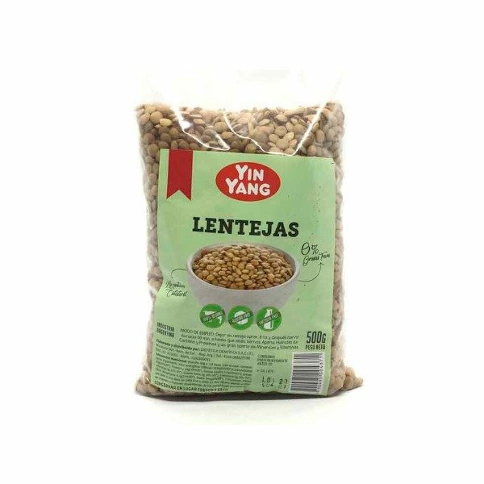
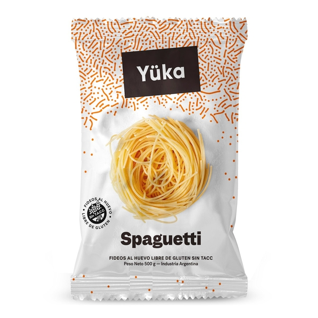
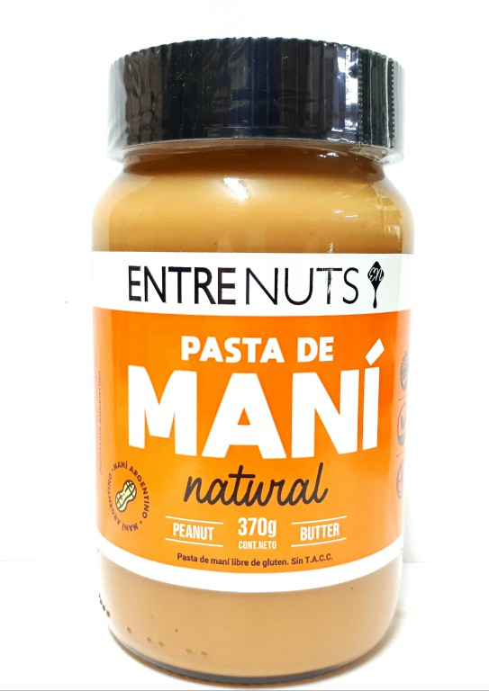
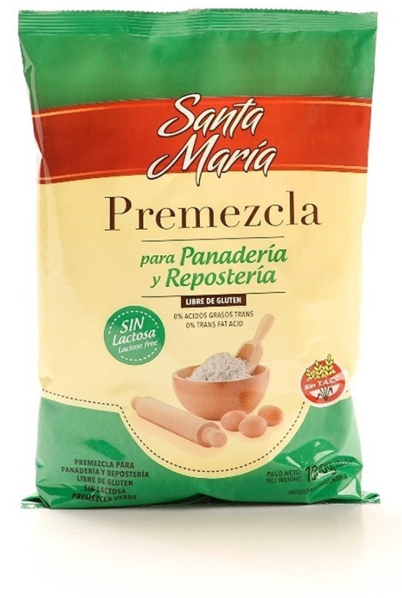

Sobre Nosotros
Almacén gluten free nace en pandemia desde que a un integrante de la familia le diagnostican celiaquía.
La celiaquía es una reacción inmunológica ante la ingesta de gluten, una proteína presente en el trigo, la cebada y el centeno.
Emprendimos el camino de una alimentación libre de gluten, consciente y lo más orgánica posible. Aprendimos sobre la variedad de alimentos y sus nutrientes.
Nuestros productos se caracterizan por ser una gran variedad de productos libres de gluten, realizados a bases de harina de arroz, fécula de maíz, fécula de mandioca.
Hoy en día nuestro deseo es estar presente en cada uno de sus hogares y que se sientan libres de disfrutar de sus comidas sin gluten. Que nuestros productos sean la conexión para el compartir con nuestros seres queridos...
Productos Gluten Free
Pepitas Yuka
Galletitas deliciosas de harina de arroz y fécula de mandioca

Lentejas Yin Yang
Lentejas alto contenido de fibras

Fideos Spaguetti Yuka
Spaguetti al huevo de harina de arroz y fécula de mandioca

Pasta de Maní Entrenuts
Pasta de Maní Natural, sin azúcar

Harina Premezcla Santa María
Premezcla a base de harina de arroz, fécula de mandioca, almidón de maíz y fécula de papa. Sin lactosa
Recetas
Pizza
INGREDIENTES:
200 grs de premezcla 5 grs de levadura seca 10 grs de azúcar 275 ml de agua a temperatura ambiente 2 cucharadas de aceite sal c/n
PREPARACIÓN: Colocamos la premezcla en un bowl y hacemos una corona. En el centro ponemos la levadura seca, el azúcar y un chorrito de agua.
Comenzamos a batir, con batidora eléctrica! Y seguimos agregando agua, hasta completar el total. Cuando tenemos todo integrado, agregamos el aceite y por último la sal a gusto! Seguimos batiendo hasta que quede una masa bien cremosa y sin grumos! Con la ayuda de una espátula de silicona, la desparramamos en una pizzera previamente aceitada y emparejamos toda la superficie y el borde.
Dejamos levar tapada unos 20-30 minutos. Llevamos al horno por unos 25 minutos, retiramos, cubrimos con salsa, queso, un poco de condimentos y vuelve al horno hasta que esté lista!
Alfajores de Maicena
INGREDIENTES:
150 grs de almidón de maíz. 75 grs de fécula de mandioca. 25 grs de harina de arroz integral (también puede ser blanca). 50 grs de leche en polvo descremada. 1 cdta de goma xántica (o polvo para panificar harinas sin gluten) 100 grs de aceite de coco (también puede ser manteca). 75 grs de azúcar impalpable. 1 huevo. ralladura de 1/2 limón. 1 cdta de esencia de vainilla. dulce de leche y coco rallado C/N.
PREPARACIÓN Precalentar el horno en 180 grados. Batir el aceite de coco junto con el azúcar, el huevo, la ralladura de limón y la esencia de vainilla. Agregar los secos (previamente mezclados) y mezclar con las manos hasta formar una masa lisa.
Estirar entre papel film hasta los 0,5 cm de espesor. Cortar las tapitas y colocar sobre una placa para horno apenas aceitada o enmantecada. Llevar al horno de 8 a 10 minutos.
Cuando la base tiene un color apenas doradito ya están listas! Una vez frías, unir las tapitas de a dos con bastante dulce de leche y pasar por coco rallado.